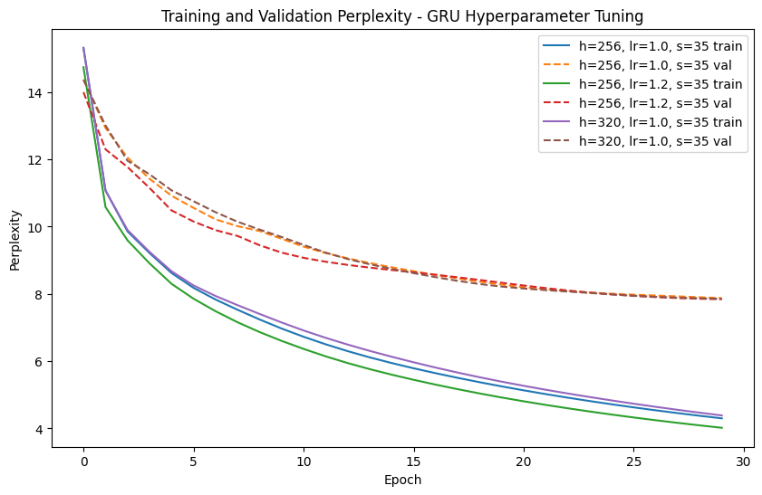
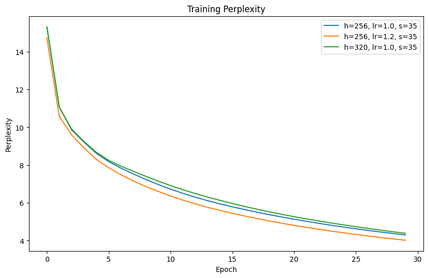
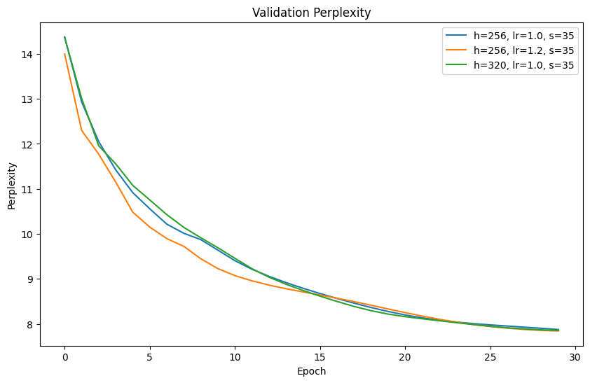
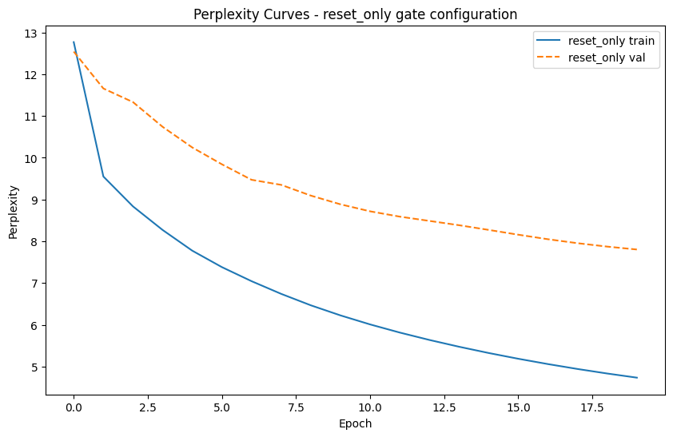
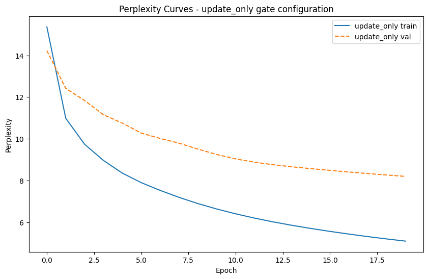
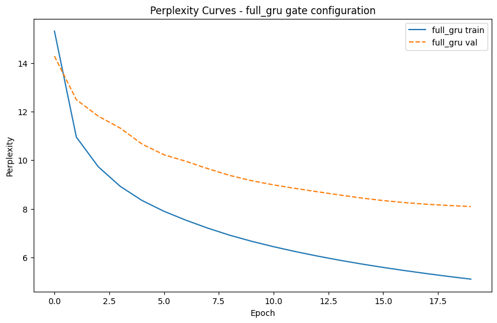

Report Overview
This report compares a scratch implementation of a Basic RNN and a GRU on The Time Machine character-level language modeling task. Results are discussed using validation perplexity, training stability, runtime, and qualitative sample output sequences.
- Primary metric: Validation perplexity.
- Dataset: The Time Machine.
- Environment: Python 3.10 + PyTorch
Experimental Setup
| Item | Value |
|---|---|
| Tokenization | Character-level |
| Train/Validation Split | 90/10 split |
| Loss | Cross-entropy |
| Optimizer | SGD |
| Batch Size | 32 |
Part 1: Basic RNN
Task 1: Hyperparameter Tuning
Goal: achieve the lowest possible validation perplexity by tuning epochs, hidden units, time steps, and learning rate.
Top 3 Configurations
| Config | Epochs | Hidden Units | Time Steps | Learning Rate | Best Train PPL | Best Val PPL | Notes |
|---|---|---|---|---|---|---|---|
| A | 30 | 256 | 50 | 1.0 | 5.038 | 8.5359 | Best overall in Round 2; best epoch 26. |
| B | 30 | 256 | 35 | 0.8 | 4.965 | 8.6568 | Stable convergence; near-best validation curve. |
| C | 30 | 256 | 35 | 1.0 | 4.925 | 8.7461 | Good early minima (best epoch 21), mild late overfitting. |
Perplexity Curves


Discussion
For the basic RNN, a two-round tuning strategy was used: an initial broad sweep followed by a targeted search near the strongest region. The best validation perplexity improved from 8.7604 in the broad round to 8.5359 after targeted tuning. The strongest runs consistently favored hidden units of 256 and relatively large learning rates (0.8 to 1.0).
Increasing epochs from 20 to 30 improved the best-achieved validation perplexity, but several runs reached their minimum before the final epoch,
indicating mild late overfitting. In this setting, steps=50 gave the single best run when paired with hidden=256 and lr=1.0.
The learning rate had the strongest effect on model performance within the tested range. Models trained with a learning rate of 1.0 consistently achieved lower validation perplexity compared to 0.5 or 0.3. Lower learning rates tended to slow convergence and resulted in slightly higher final perplexity values.
Increasing the hidden dimension from 128 to 256 produced a small but consistent improvement in validation perplexity. This suggests that a larger hidden representation allowed the RNN to capture richer character dependencies. However, further increases beyond 256 (e.g., 320 or 384) did not lead to additional improvements, indicating diminishing returns for larger hidden sizes in this model.
The number of unrolled time steps had a smaller but noticeable impact. Runs with 50 time steps occasionally achieved slightly better perplexity than those with 35 time steps, suggesting that longer sequence context can improve language modeling performance. However, the difference between the two settings was relatively small.
Task 2: Gradient Clipping and Activation Function Study
Experiment A: No Gradient Clipping
Removing clipping resulted in little consequences to our training stability, but the validation curve expressed more instability.
However, testing validation was pretty consistent between implementing clipping and not.

Experiment B: Replace Activation with ReLU (With Clipping)
ReLU resulted in better training and validation perplexities (~ -1) than tanh activation.
Interestingly, ReLU with clipping also had little effect on the training stability, but resulted in a less smooth validation curve than Tanh activation without clipping.
The best configuration we found earlier seemed to fare best in terms of stability, which was even smoother than the lower learning rate configuration.

Experiment C: Replace Activation with ReLU (No Clipping)
Even without clipping, ReLU showed improved performance in terms of training and validation perplexities, but by a much smaller margin (~ .1).
Removing clipping with ReLU seemed to have significantly less smooth validation curves even between both variants, but different configurations seemed to diverge from eachother more.

Do We Need Clipping with ReLU?
Compared to our original trial using Tanh activation and clipping, ReLU performed much better in terms of validation perplexity, but had much less smooth validation curves
While not necessary, ReLU does result in marginally better perplexity without clipping, but improves significantly with it. Clipping also resulted in a much more smooth validation curve overall.
Part 2: GRU
Task 1: Hyperparameter Tuning and Analysis
Tune hyperparameters and then analyze runtime, perplexity, and output sequence quality.
Top 3 Configurations
| Config | Epochs | Hidden Units | Time Steps | Learning Rate | Runtime | Best Train PPL | Best Val PPL | Output Sample |
|---|---|---|---|---|---|---|---|---|
| A | 30 | 256 | 30 | 1.0 | 250.02s | ~4.3 | 7.8106 | the time traveller in the dimentions of the dimentions of the dimentions of the dimentions of the dimentions of the dimentions of |
| B | 30 | 256 | 30 | 1.2 | 249.56s | ~4.0 | 7.8190 | the time that i had seemed to me the dimensions of the darkness of the darkness of the darkness of the darkness of the darkness |
| C | 30 | 320 | 30 | 1.0 | 237.71s | ~4.4 | 7.8562 | the time traveller the strong had so the strong had so the strong had so the strong had so the strong had so the strong had so th . |
Perplexity Curves



Discussion
GRU tuning also used a broad-plus-targeted strategy. Round 1 baseline best was 8.0660, and targeted Round 2 reduced this to 7.8106, outperforming the basic RNN best in this project (using Tanh + Clipping). The best region was around hidden sizes 256 to 320 with learning rates 1.0 to 1.2 and 30 epochs.
In terms of trade-offs, increasing hidden size beyond 256 did not produce a large gain in validation perplexity, so 256 is the best efficiency/quality point among tested settings. Interestingly, it seemed that runtime may have decreased with larger hidden sizes, but that may be due to random variation in GPU load rather than a true effect.
30 epochs had much better performance than 20 epochs, and the best runs reached their minima near the end of training, indicating that longer training was beneficial for GRU. Longer time steps (50 vs 30) did not improve validation perplexity, and in some cases slightly worsened it.
In terms of the sample output, the second best configuration actually seemed to have the most coherent output, with more complete words and began repeating later in the sequence. The best configuration had slightly better perplexity but produced a typo with earlier repetition.
Task 2: Ablation Study on GRU Gates
Variant A: Reset Gate Only (No Update Gate)
[Describe implementation choice and behavior.]

Variant B: Update Gate Only (No Reset Gate)
[Describe implementation choice and behavior.]

Control: Full GRU

Discussion
All three models actually performed relatively similar in terms of validation perplexity, with relatively similar training curves. However, the update-only gate configuration had the smoothest validation curve, while the other two were a bit jagged. The reset-only variant had a slightly lower final perplexity, while the update-only and full GRU were quite close. However, the update-only GRU had a bigger gap between the control and reset-only, with a final validation perplexity of 8.343 compared to the 7.8-7.9 range the other two variants had.
However, this may be due to an incorrect implementation of the ablation, which is not unlikely. Alternatively, random factors could have just favored the trial for the reset-only variant. The reset-only variation ran much faster than the other two, at 129.8 seconds compared to the full-gru's 147.08 seconds and the update-only's 161.20 seconds.
Final Takeaways
- Targeted second-round tuning consistently improved results over the initial broad sweep for both RNN and GRU.
- Best basic RNN configuration reached validation perplexity 8.5359; best GRU reached 7.8106 (lower is better).
- Across both models, moderate-to-high learning rates (around 1.0), hidden size near 256, and longer training (30 epochs) were the most effective tested settings.